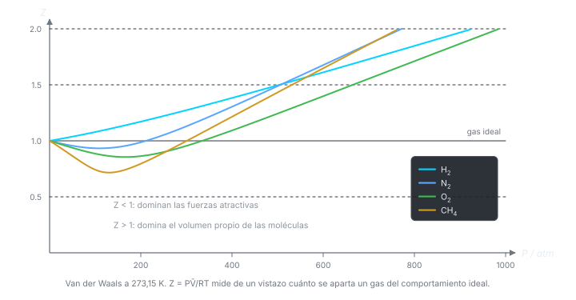

Clase 2: Desviaciones del Gas Ideal y Ecuación de Van der Waals
Dónde falla el gas ideal y cómo repararlo: el factor de compresibilidad como medida de la no idealidad, y la ecuación de Van der Waals construida a partir de dos correcciones físicas — tamaño molecular y atracción.
Temas que cubre
- Cierre de la ley barométrica: integración de
- Factor de compresibilidad : definición empírica de la desviación respecto del gas ideal
- Lectura de las curvas vs. a C: qué gases caen bajo y por qué
- Primera corrección: volumen finito de las moléculas,
- Por qué esa corrección explica al pero no al ni al
- Segunda corrección: fuerzas atractivas intermoleculares, término
- Ecuación de Van der Waals y sus formas equivalentes (molar y con moles)
- Significado físico y unidades de las constantes y ; tablas
Conceptos clave
Factor de compresibilidad
. Es un factor empírico, no un modelo: mide cuánto se aparta el gas del comportamiento ideal. Para el gas ideal siempre; para gases reales .
La constante — volumen excluido
Las moléculas ocupan espacio: cuando el volumen no tiende a cero sino a , que es aproximadamente el volumen molar del líquido. Este efecto aumenta respecto del ideal y empuja por encima de 1.
La constante — atracción
Las moléculas cerca de la pared son jaladas hacia adentro por sus vecinas, así que golpean con menos fuerza: la presión medida es menor que la ideal. La corrección va como porque depende del producto de dos densidades (la que atrae y la atraída).
Alcance de las fuerzas
Las fuerzas de Van der Waals son de muy corto alcance (~nm). En el interior del fluido se cancelan por simetría; sólo importan en la capa cercana a las paredes, que es donde se mide la presión.
Dos efectos en competencia
tiende a subir , tiende a bajarlo. Cuál gana depende de y — de ahí que tenga pendiente inicial positiva y el negativa. La clase 3 formaliza esta competencia.
Ecuación de estado empírica
Van der Waals no se deriva desde primeros principios: es el gas ideal con dos parches físicamente motivados. y se ajustan a datos experimentales y están tabulados para cada sustancia.
Fórmulas fundamentales




Qué hay que entender
- no explica nada: sólo cuantifica la desviación. Van der Waals sí explica, atribuyéndola a dos causas físicas concretas.
- Los dos parches tiran en direcciones opuestas. Si en un problema , domina la atracción (); si , domina el tamaño ().
- volumen molar del líquido. Ese es el argumento que motivó la corrección: al licuar, el volumen deja de cambiar mucho.
- El término se resta a la presión porque las atracciones frenan a las moléculas justo antes del impacto contra la pared.
- Cuidado con la forma que se usa: usa volumen molar; usa volumen total.
- Van der Waals es sólo una de muchas ecuaciones de estado (virial, Berthelot, Redlich-Kwong). Se estudia porque es la más simple que captura la física correcta.